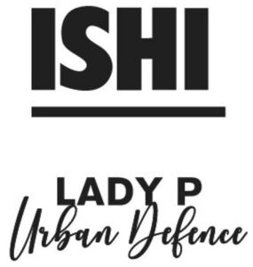

Trade Mark Journal No.2025/036 5 September 2025
WO0000001857682 (3)
Office of origin: Italy
Date of International Registration:18 February 2025
Date of designation in the UK:
18 February 2025

The trademark consists of the fancy word ISHI LADY P Urban Defence.
International priority date claimed: 22 October 2024
(Italy)
(302024000156792)
- Class 3
- Lip conditioners; hair balsam; lip balms [non-medicated]; balms, other than for medical purposes; cosmetics; beauty care cosmetics; cosmetics and cosmetic preparations; natural cosmetics; non-medicated cosmetics; organic cosmetics; cosmetics for the treatment of dry skin; cosmetic preparations for skin care; lip cosmetics; cosmetics for protecting the skin from sunburn; cosmetics for personal use; non-medicated foot cream; lip cream; anti-aging creams; beauty balm creams; cosmetic creams; cosmetic nourishing creams; skin care creams [cosmetic]; cosmetic hand creams; cosmetic creams for dry skin; day creams; night cream; washing creams; skin cleansing cream; sun protecting creams [cosmetics]; aftershave creams; cosmetic creams and lotions; scented body lotions and creams; skin conditioning creams for cosmetic purposes; cold creams for cosmetic use; exfoliant creams; vanishing creams; moisturising creams; moisturising skin creams [cosmetic]; aromatherapy creams; body cream; face and body creams; face creams for cosmetic use; skin lightening creams; creams for cellulite reduction; age spot reducing creams; hand creams; anti-wrinkle cream; massage creams, not medicated; fair complexion creams [cosmetic]; creams for firming the skin; skin whitening creams; scented body creams; hair protection creams; recovery creams for cosmetic use; sun creams; make-up removing creams; toning creams [cosmetic]; moisturising creams, lotions and gels; skin cleansers [cosmetic]; hand cleansers; hair emollients; smoothing emulsions for the skin; facial emulsions [cosmetic]; exfoliants; exfoliating scrubs for the feet; exfoliants for the care of the skin; exfoliants for the cleansing of the skin; exfoliating scrubs for the hands; sunscreen; moisturising gels [cosmetic]; body and facial gels [cosmetics]; massage gels, other than for medical purposes; gels for cosmetic use; skin moisturisers; moisturizing milk; cleansing milks for skin care; sun-tanning preparations [cosmetics]; bath lotion; skin lotion; milky lotions for skin care; cosmetic hair lotions; cosmetic facial lotions; skin care lotions [cosmetic]; skin cleansing lotion; massage oils and lotions; moisturising skin lotions [cosmetic]; aromatherapy lotions; lotions for face and body care; lotions for cellulite reduction; hand lotions; lotions for cosmetic purposes; non-medicated skin clarifying lotions; non-medicated stimulating lotions for the skin; beauty masks; skin moisturizer masks; hand masks for skin care; foot masks for skin care; essential oils for cosmetic purposes; essential oils for personal use; lip pomades; pomades for cosmetic purposes; wrinkle removing skin care preparations; cosmetic preparations for body care; aloe vera preparations for cosmetic purposes; collagen preparations for cosmetic purposes; phytocosmetic preparations; skin softening preparations; washing preparations for household purposes; compounds for skin care after exposure to the suns rays; skin whitening preparations [cosmetic]; anti-aging skincare preparations; cosmetic preparations for dry skin during pregnancy; cosmetic nail care preparations; cosmetic preparations for skin renewal; cosmetic preparations for slimming purposes; make-up; cosmetic preparations for bath and shower; facial preparations; cosmetic products for the shower; cosmetic skin enhancers; non-medicated beauty preparations; lip protectors [cosmetic]; skin conditioners; skin care preparations; skin whitening preparations; skin fresheners; skin lighteners; sun care preparations for cosmetic use; perfumes; lip coatings [cosmetic]; sun protectors for lips [cosmetic]; wipes impregnated with a skin cleanser; beauty serums; facial serum for cosmetic use; hair care serums; serums for cosmetic purposes; skin relief serum [cosmetic]; skin calming serum; skin cleaning and freshening sprays; topical skin sprays for cosmetic purposes; non medicated skin toners; toners for cosmetic purposes; skin make-up; skin cleansers; skin emollients; body emulsions; oils for skin care [cosmetic]; hair care preparations; shampoos; hair nourishers; hair wash.
LUXIS GROUP SRL
Representative: PRAXI INTELLECTUAL PROPERTY SPA, Via F. Baracca, 1/R, I-17100 SAVONA, ITALY